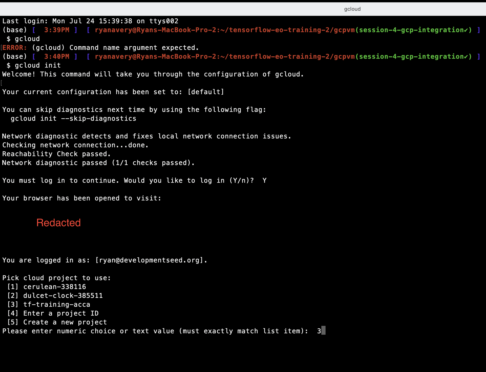

What are cloud providers? Why might I need them for ML and Earth observation data?#
The three big cloud providers, Amazon Web Services, Microsoft Azure, and Google Cloud Platform, each provide three general services that can be essential when developing machine learning models and services on top of geospatial imagery:
data warehouses containing many popular satellite, climate, weather, and other geospatial data archives
the ability to rent computers with GPUs (graphical processing units), which can train machine learning models 10x-1000x faster than CPUs
the ability to rent higher level computational services.
Example 1: AWS Batch can perform batch processing (spinning up many machines to process lots of data).
Example 2: Google Cloud Functions allow you to run code without managing servers (their lifecycle, starting them up and shutting them off, or the machine type). This paradigm of computing is called “Serverless”, and allows you to execute code that scales by demand, in an event-driven way. Typically, this is pay-per-use.
We typically need GPUs to train machine learning models. Because they are computationally intensive, we rely on GPUs to run training experiments in a reasonable amount of time (minutes instead of hours, or hours instead of days).
Because IO (Input/Output) operations can take up a lot of time when training models or running model inference, it helps to run the compute next to the data. this means using cloud data storage directly rather than downloading files to another machine.
Finally, if we want to build complex, event-driven services that use machine learning, cloud-based services are typically the easiest, most reproducible, most fault-tolerant, and most scalable way to build these services.
What is Google Cloud Platform? How is it different from Google Colab?#
Google Cloud Platform (GCP) is a suite of cloud services including computing, data storage, data analytics and more. For a machine learning engineer looking to develop ML models on large geospatial datasets and integrate those models into applications for monitoring and detection, the following GCP services would be particularly useful:
Compute Engine: Infrastructure as a Service (IaaS) providing VMs. This is suitable for running geospatial data processing or analysis tasks that require significant compute resources. It has the capability to provision machine types with varying amounts of GPU and CPU computing power as well as RAM and disk space.
Cloud Storage: Object storage for keeping data, such as geospatial datasets, model checkpoints, and training data. It supports different storage classes (like multi-regional, regional, nearline, coldline) to optimize cost. The main receptacle for storing data in Cloud Storage is called a “bucket”.
Cloud Functions: Serverless compute service to run single-purpose code in response to events. This can be useful for smaller, event-driven tasks, like running a machine learning model on a satellite image whenever it is placed in a Google Cloud Storage bucket.
IAM & Security: Ensures that your data and services are secure. Given the sensitivity of some geospatial data, understanding and implementing correct access controls is crucial.
In addition, the following services may be useful alternatives setting up Cloud Functions or Compute Engine VMs directly. These may have added costs, harder to inspect costs, and may be less customizable for a particular application:
Kubernetes Engine (GKE): Managed Kubernetes service for deploying, managing, and scaling containerized applications. This can be useful for deploying machine learning models as microservices.
AI Platform Training: This service provides a managed service for training ML models at scale. It supports multiple ML frameworks such as TensorFlow, scikit-learn, and XGBoost. It also provides GPU and TPU support to accelerate training.
AI Platform Prediction: Allows for deployment of trained machine learning models for making online predictions. It can expose your trained model as a RESTful API, which can be consumed by other applications.
We have a preexisting Google Cloud project for the ACCA team. We’ll use this to demo deploying a Machine Learning workstation with Terraform, which will let us start a Jupyter Notebook on a Compute Engine instance type of our choice, with as many GPUs, RAM, and disk space as we want that is supported by the instance type selection. These can be payed for with your preferred payment method or cloud credits if you have access to cloud credits via a partnership with a Google Affiliated program.
Deploying an ML Workstation with Terraform#
GCloud Terminal CLI Setup Instructions#
Install Google Cloud SDK: If you haven’t installed the Google Cloud SDK on your machine, you can download and install it from the official Google Cloud website: https://cloud.google.com/sdk/docs/install. Then, accept the arguments with “Y” that append the CLI commands to your terminal configuration file, like your
~/.bashrcor~/.zshrcfileInitialize gcloud: After installing the SDK, open your terminal (command prompt) and run the following command to initialize gcloud:
gcloud init

Login with your Google Account: The above command will prompt you to log in to your Google Account in your web browser. Click on the provided link, sign in with your Google Account, and authorize the SDK to access your Google Cloud resources.
Select a project: If you have multiple projects associated with your Google Account, you’ll be asked to choose the project you want to use. The list of projects will be displayed in the terminal, and you can select the appropriate project by typing the corresponding number.
Set default configuration (optional): After selecting the project, you can choose to set it as the default configuration by typing “Y” when prompted. This will make it the default project for future gcloud commands.
Configuration completion: Once the configuration is complete, you’ll receive a message confirming that you are now authenticated and set up to use the selected Google Cloud project.
Terraform Setup Instructions#
Install terraform following these instructions: https://developer.hashicorp.com/terraform/tutorials/aws-get-started/install-cli You can skip the Quickstart tutorial
Navigate to the
gcpvm/folder in this repository: TODO All commands for controlling the VM must be run from thegcpvm/folder.Run
terraform initto initialize terraform and download the correct versions of libraries used to create the Google Cloud resources.Run
gcloud auth application-default loginto authenticate terraform to use the gcloud CLI to provision resources.For new projects, you may need to enable Compute Engine by visiting https://console.developers.google.com/apis/api/compute.googleapis.com/overview?project=161564225007 and clicking “Enable”.
Run
terraform applyto create the VM.
Run
terraform destroyto remove all resources so you don’t pay for them. Runmake stopto stop the VM but persist the disk space so that you only pay for storing resources, which is much less expesnive than the cost of running the VM (1-3 US dollars per hour for a GPU).
terraform apply will create the ML workstation, including reserved disk space, static ip addresses that allow you to access the instance from anywhere with a wifi connection, the VM with CPU or GPU, etc. Each of these resources has a variety of properties. In particular for ML development, it’s important to pay attention to RAM, disk size, CPU/GPU type, the compute region. Make sure the compute region for the VM is close to the cloud data bucket for fast read/write!
Note: If you are creating a project from scratch, you may need to request Google Cloud to increase your quota so you can create GPU VMs. It is 0 by default for new projects. To do so,
Navigate to https://console.cloud.google.com/iam-admin/quotas and make sure you have the correct project selected in the console.
Select the following text in the “Filter” search box to find the correct resource to request a quota for: “GPUs All Regions”

Go to “Edit Quotas” after checking the box next to the Filter result “Compute Engine API” and increase the limit from 0 to 1. Submit the required info and wait for an email that says the request has been processed. It should look something like:
Hello,
Your quota request for tf-training-acca has been approved and your project quota has been adjusted according to the following requested limits:
+——————+————+——–+—————–+—————-+
| NAME | DIMENSIONS | REGION | REQUESTED LIMIT | APPROVED LIMIT |
+——————+————+——–+—————–+—————-+
| GPUS_ALL_REGIONS | | GLOBAL | 1 | 1 |
+——————+————+——–+—————–+—————-+
After approved, Quotas can take up to 15 min to be fully visible in the Cloud Console and available to you.
Configuring Terraform to change deployment parameters#
Callout: Not all GPU types are available in all zones. And not all GPU types have equal capabilities. See this list for supported GPU types by zone: https://cloud.google.com/compute/docs/gpus/gpu-regions-zones In particular, southamerica zones only support the old T4 GPU type. other zones in asia, europe, north america, us-west, and us-east support other GPU types.